Apple
Apple Inc. (NASDAQ: AAPL; NYSE: AAPL; anteriormente Apple Computer, Inc.) é uma empresa multinacional norte-americana que tem o objetivo de projetar e comercializar produtos eletrônicos de consumo, software de computador e computadores pessoais. Os produtos de hardware mais conhecidos da empresa incluem a linha de computadores Macintosh, iPod, iPhone, iPad, Apple TV e o Apple Watch. Os softwares incluem o sistema operacional macOS, o navegador de mídia iTunes, suíte de software multimídia e criatividade iLife, suíte de software de produtividade iWork, Aperture, um pacote de fotografia profissional, Final Cut Studio, uma suíte de vídeo profissional, produtos de software, Lógica Studio, um conjunto de ferramentas de produção musical, navegador Safari e o iOS, um sistema operacional móvel.
Em agosto de 2010, a empresa operava 301 lojas de varejo em dez países, e uma loja online onde os produtos de hardware e software são vendidos. Para além das Apple Store, a empresa possui as Apple Shops e as Apple Premium Resellers (APR's). As primeiras são pequenas áreas exclusivas à marca, devidamente sinalizadas e inseridas em operadores multimarca. As APR's são parcerias estabelecidas com empresários locais e são lojas exclusivas à marca e que disponibilizam toda a gama de produtos e serviços colocados ao dispor do cliente pela casa-mãe. Em maio de 2011, a Apple era uma das maiores empresas do mundo e a empresa de tecnologia mais valiosa do planeta, tendo ultrapassado a Microsoft. Em janeiro de 2012 a Apple passou a multinacional do petróleo ExxonMobil em valor de mercado e passa a ser a maior empresa de capital aberto do mundo No ano de 2016, ela foi ultrapassada pelo Google como marca mais valiosa do mundo, mantendo a vice-liderança, avaliada em 228 bilhões de dólares.
Fundada em 1 de abril de 1976 em Cupertino, Califórnia, e incorporada 3 de janeiro de 1977, a empresa foi anteriormente denominada Apple Computer, Inc. nos seus primeiros 30 anos, mas retirou a palavra "Computer" em 9 de janeiro de 2007, para refletir a contínua expansão da empresa no mercado de eletrônicos de consumo, além de seu foco tradicional em computadores pessoais. Em setembro de 2010, a Apple tinha 46,6 mil empregados em tempo integral e 2.800 temporários empregados em tempo integral em todo o mundo e tinha vendas anuais mundiais de 65,23 bilhões de dólares.
Por motivos tão variados como a sua filosofia de design estético completo até suas campanhas de publicidade distintas, a Apple estabeleceu uma reputação única na indústria de eletrônicos de consumo. Isso inclui uma base de clientes que se dedica à empresa e sua marca, especialmente nos Estados Unidos. A revista Fortune classificou a Apple a empresa mais admirada nos Estados Unidos em 2008, e do mundo em 2008, 2009 e 2010. A empresa também tem recebido críticas por seu contratos de trabalho, cuidado ambiental e práticas de negócios, incluindo as origens primárias dos materiais de base. No dia 2 de agosto de 2018, a Apple atingiu 1 trilhão de dólares em valor de mercado, a primeira empresa americana a chegar a este valor.
História
A Apple foi fundada por Steve Wozniak, Steve Jobs e Ronald Wayne com o nome de Apple Computers INC., em 1976, na Califórnia. Com vendas anuais (no ano fiscal de 2006) em torno dos US$ 19,3 bilhões, e sediada em Cupertino, na Califórnia, a Apple desenvolve, vende e oferece suporte a uma série de computadores pessoais, reprodutores de mídia portáteis, software e hardware. Entre os produtos mais conhecidos da empresa estão a linha de computadores Mac, seu sistema operacional Mac OS X e a linha iPod de reprodutores de mídia portáteis. Para o iPod e seu programa, o iTunes, a Apple vende audiobooks, filmes, jogos, música, programas televisivos e videoclipes na sua iTunes Store, recentemente entrou no ramo de celulares com a criação do iPhone.
A empresa era conhecida por Apple Computer, Inc. pelos seus primeiros 30 anos de existência, mas retirou a palavra "Computer" de sua razão social em 9 de janeiro de 2007. A mudança de nome, que seguiu a introdução do smartphone iPhone e do sistema de vídeo digital Apple TV, é uma representante da contínua expansão da empresa em outros mercados além do seu foco tradicional em computadores.
A "Apple" também opera mais de 200 pontos de venda nos Estados Unidos, Japão, Reino Unido, Canadá e Itália. As lojas vendem a maioria dos produtos da empresa, assim como muitos produtos de terceiros e oferece suporte e consertos no local para seu hardware e software. A empresa emprega mais de 20 000 pessoas mundo afora, entre cargos permanentes e temporários.
Por uma variedade de razões, desde sua filosofia de design às suas raízes indie, assim como suas campanhas publicitárias, a Apple construiu uma reputação distinta na indústria de informática e eletrônicos e cultivou uma base de consumidores que é devotada de modo incomum à empresa e à sua marca. Na data de 24 de agosto de 2011 Steve Jobs anuncia oficialmente a sua renúncia do cargo de CEO da Apple e em 5 de outubro de 2011, falece.
Correu um boato de que a empresa tinha superado a Microsoft em meados de 1999 em valor de mercado que teria se tornado o maior da história, mas o valor corrigido da inflação mostra que a Apple não tinha chegado àquele valor.
Apple 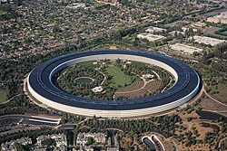 Vista aérea do Apple Park em Cupertino, Califórnia Razão socia l Apple Inc. Tipo Empresa cotada em bolsa Slogan "Think different" (em Inglês) (Pense Diferente) em português Cotação NASDAQ: AAPL NYSE: AAPL NASDAQ-100 Component S&P 500 Component Indústria Hardware de Computador Software de Computador Eletrônicos de consumo Gênero Incorporation Fundação 1 de abril de 1976 (42 anos), como Apple Computer, Inc. Califórnia, Estados Unidos Fundador(es) Steve Jobs Steve Wozniak Ronald Wayne Locais 453 lojas de varejo em 16 países (março de 2015) Pessoas- Tim Cook (CEO) chave Jonathan Ive (CDO) Luca Maestri (CFO) Jeff Williams (COO) Empregados 80 300 (2014) Produtos Lista de produtos
Subsidiárias Braeburn Capital FileMaker Inc. Beats Electronics Anobit Valor de US$ 1 trilhão (2018) mercado Receita US$ 182,795 bilhões (FY 2014) Lucro US$ 45,687 bilhões (2016) Faturamento US$ 47,79 bilhões (FY 2010) Renda líquida US$ 14,01 bilhões (FY 2010) Website Apple.com oficial |
Em 1976, Steve Jobs fundou a empresa na garagem desta casa em Crist Drive Los Altos, Califórnia. |
O Apple II, apresentado em 1977, foi um grande avanço em relação ao seu predecessor, o Apple I. |
Identidade da empresa
Logos
De acordo com Steve Jobs, o nome da empresa foi inspirado por sua visita a uma fazenda de maçãs, enquanto ele estava em uma dieta frutarianista. Jobs pensava que o nome "Apple" era "divertido, animado e não intimidante".
O primeiro logotipo da Apple, desenhado por Ron Wayne, retrata Sir Isaac Newton sentado sob uma macieira. Foi quase imediatamente substituído pelo "arco-íris Apple" de Rob Janoff, a agora conhecida silhueta cor de arco-íris de uma maçã com uma mordida. Janoff apresentou Jobs com vários temas monocromáticos diferentes para o logotipo "mordido" e Jobs imediatamente gostou dele. No entanto, Jobs insistiu que o logotipo deveria ser colorido para humanizar a empresa. The logo was designed with a bite so that it would not be confused with a cherry. O logotipo foi projetado com uma mordida para que não fosse confundido com uma cereja. As listras coloridas foram concebidas para tornar o logotipo mais acessível e para representar o fato de que o Apple II poderia gerar gráficos em cores. Este logo é muitas vezes erroneamente referido como uma homenagem a Alan Turing, com a marca de mordida uma referência ao seu método de suicídio. Tanto Janoff quanto a Apple negam qualquer homenagem a Turing no desenho do logotipo.
Em 27 de agosto de 1999 (o ano seguinte à introdução do iMac G3), a Apple deixou de usar oficialmente o esquema do arco-íris e começou a usar logotipos monocromáticos quase idênticos em forma à encarnação anterior do arco-íris.
Steve Jobs e Steve Wozniak eram fãs dos The Beatles, mas a Apple Inc. teve problemas de marca registrada e nome com a Apple Corps Ltd., uma empresa multimídia iniciada pelos Beatles em 1967. Isso resultou em uma série de ações judiciais e de tensão entre as duas empresas. Essas questões terminaram com a resolução de seu mais recente processo em 2007.
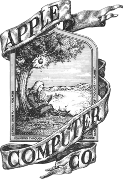
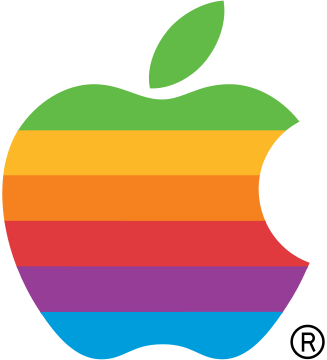
Ajude o Site Faça a Sua Doação
Primeiro protótipo de logo, de 1 de abril de 1976.
Primeiro logo oficial de abril de 1976 até 1998
Apple logo 1998-2003
Atual logo, desde 2003
Sede
A sede corporativa mundial da Apple Inc. está localizada no centro do Vale do Silício, no 1-6 Infinite Loop, em Cupertino, Califórnia. Este campus da Apple tem seis edifícios que totalizam 79.000 metros quadrados e foi construído em 1993 pela Sobrato Development Cos.
A Apple tem um campus satélite na vizinha Sunnyvale, Califórnia, onde abriga um laboratório de testes e pesquisa. O AppleInsider publicou o artigo em março 2014 que reivindica que Apple tem escondido uma instalação secreta onde está desenvolvendo o projeto de veículo elétrico de SG5, codinome "Titã", sob o nome de companhia do escudo SixtyEight Research.
Em 2006, a Apple anunciou sua intenção de construir um segundo campus em Cupertino cerca de 1,6 km a leste do atual campus e ao lado da Interstate 280. O novo edifício do campus será projetado por Norman Foster. A Câmara Municipal de Cupertino aprovou o projeto do design de "nave espacial" do campus em 15 de outubro de 2013, após uma apresentação de 2011 onde Jobs detalhava o projeto arquitetônico do novo edifício e seus arredores. O novo campus está planejado para abrigar até 13.000 funcionários em um prédio central, de quatro andares, circular, rodeado por extensa paisagem. Dispõe de um café com espaço para 3.000 pessoas sentadas e estacionamento subterrâneo, bem como em uma estrutura de estacionamento. A instalação de 260.000 m² incluirá também projetos originais de Jobs para um centro de aptidão e um auditório incorporado.
A sede da Apple na Europa, Oriente Médio e África (EMEA) está localizada em Cork, no sul da Irlanda. A instalação, inaugurada em 1980, foi a primeira localização da Apple fora dos Estados Unidos. A Apple Sales International, que lida com todas as vendas internacionais da Apple fora dos EUA, está localizada no campus da Apple em Cork, juntamente com a Apple Distribution International, que também trata da rede de distribuição internacional da Apple. Em 20 de abril de 2012, a Apple acrescentou 500 novos empregos em sua sede europeia, aumentando a força de trabalho total de cerca de 2.800 para 3.300 funcionários. A empresa irá construir um novo bloco de escritórios em seu Hollyhill Campus para acomodar o pessoal adicional.
Em fevereiro de 2015, a Apple abriu sua nova sede de 180 mil pés quadrados em Herzliya, Israel, que acomodará aproximadamente 800 funcionários. Essa abertura foi o terceiro escritório da Apple localizado em Israel; o primeiro, também em Herzliya, foi obtido como parte da aquisição de Anobit e o outro é um centro de pesquisa em Haifa.
| 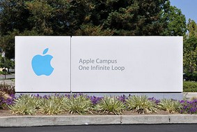 Placa na entrada do Apple Campus em Cupertino, Califórnia. | 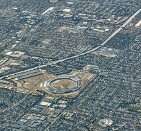 Fotografia aérea do Apple Park em Cupertino |
Lojas
A Apple possui 478 lojas de varejo (em março de 2016) em 17 países e uma loja online disponível em 39 países. Cada loja é projetada para atender às necessidades do local e as
autoridades reguladoras. A Apple recebeu vários prêmios de arquitetura
por seus projetos de lojas, particularmente pela localizada no centro de
Manhattan, na Quinta Avenida, em Nova York.
A Apple Store em Regent Street, em Londres, foi a primeira a abrir na Europa em novembro de 2004 e é a loja mais lucrativa de Londres com as maiores vendas por metro quadrado, levando 60.000.000 libras esterlinas a ou 2.000 libras por pé quadrado. A loja Regent Street foi superada em tamanho pela Apple Store deCovent Garden, que foi superada em tamanho pela Apple Store do Grand Central Terminal, em Nova York, em dezembro de 2011.
Dos 43.000 empregados da Apple nos Estados Unidos, 30.000
trabalham na Apple Stores. Os empregados de Apple Stores recebem acima
da média do varejo e recebem dinheiro para a faculdade, além de
inscrições em academias de ginástica, planos de saúde, descontos de
produtos e preço reduzido na compra de ações.
Um artigo do Business Insider de maio de 2016, com uma longa entrevista com um vendedor de varejo da Apple Store no Reino Unido,
destacou insatisfações e problemas significativos para os trabalhadores
de varejo, incluindo o assédio e as ameaças de morte dos clientes, uma
intensa política de crítica interna que se sente "como um culto", bônus
significativo se um trabalhador consegue garantir um contrato comercial
de "centenas de milhares", uma falta de oportunidades de promoção e,
apesar de um desconto "generoso" em qualquer produto Apple ou estoque da
Apple, os funcionários recebem tão pouco que muitos são incapazes de
comprar os próprios produtos.
Apple Store na Quinta Avenida, em Nova York | Frankfurt |  Londres Londres | 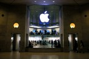 Paris | 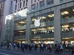 Sydney | Hong Kong | 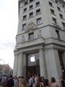 Barcelona |
Principais Produtos
Alguns produtos de sucesso da Apple:
- Apple I - O primeiro computador da empresa Apple em julho de 1976 (37 anos) e descontinuado em março de 1977 (36 anos)
- Apple II - O primeiro computador da família "II", cujo nome, mais tarde, inspirou o Macintosh "IIsi" e o "IIci" como destaque da tecnologia da época.
- Macintosh - A marca registrada da Apple para seus computadores.
- QuickTime - Uma estrutura de suporte (framework) multimídia desenvolvida pela Apple, Inc., para desenvolvimento de software capaz de manipular formatos de vídeo digital, mídia clips, som, texto, animação, música e vários tipos de imagens panorâmicas interativas.
- PowerBook G3 - 1998, Da família dos "G3"s da Apple; o primeiro notebook com processador PowerPC G3. Foi popularmente conhecido na série Sex and the city no qual a principal personagem usava-o.
- iMac - 1998, Um computador que constituía da sua torre com o monitor acoplados num só periférico. desde o primeiro modelo deste computador ele ja a possuía um design arrojado, com cores fortes de alto contraste e diversos atributos novos, com o intuito de atrair o público jovem e popularizar a marca.
- iBook - 1999, Notebook da Apple criado seguindo as mesmas características do iMac, com várias cores fortes e atributos novos.
- iPod - 2001, Um dos primeiros players portáteis de áudio e vídeo digital do mundo, que conquistou o público por sua leveza, praticidade, qualidade, modernidade e simplicidade, hoje com uma diversa linha de variadas capacidades de armazenamento e tamanhos.
- iTunes Store - 2001, é a maior galeria de música digital legalizada no mundo, foi criada para venda de músicas, clipes, álbuns, seriados e até filmes para iPod pela internet.
- iTunes - 2001, Foi desenvolvido para reproduzir e organizar arquivos de música e vídeo digitais. Pelo iTunes também é possível fazer compras de canções e vídeos na iTunes Store e carregar arquivos para iPod.
- Mac OS X - 2001, sistema operacional destinado aos computadores Macintosh. Tornou-se o ambiente baseado em Unix mais vendido até hoje (em número de computadores vendidos).
- MacBook - 2006, é o notebook sucessor do ibook. Esta máquina possui melhoramentos significativos como tela larga e já com os processadores Intel Core 2 Duo que melhoraram a confiabilidade, velocidade e, principalmente, o consumo de energia em relação ao antecessor iBook.
- iPhone - 2007, é um telefone celular com funções de tocador de áudio, câmera digital e internet. A navegação é feita através de sua tela sensível a múltiplos toques (multitouch). Destaca-se ainda pela utilização de uma versão "enxuta" do sistema operacional OS X. Após seu lançamento, o aparelho vendeu 1 milhão de unidades em um período de apenas 74 dias.
- iPod touch - 2007, é um dos modelos de iPod mais avançados, com funções quase idênticas as do iPhone, porém, sem a capacidade de fazer ligações e enviar mensagens de texto pagas. Foi apresentado em 5 de setembro de 2007.
- iPad - 2010, é um 'tablet' criado pela empresa e apresentado em 27 de janeiro de 2010. Foi lançado nos Estados Unidos em abril de 2010.
- MacBook Air - 2008, apresentado em 15 de janeiro de 2008, é um notebook Macintosh fino da Apple apresentando um disco rígido de memória sólida. Possui, em seu ponto mais largo, 0.68 pol, e no mais estreito, 0,11 pol. Isso se deve à ausência de um Disco Rígido óptico, uma vez que usa memória flash como unidade de armazenamento, mesmas memórias utilizadas em iPhones e iPads. Possui carcaça inteiriça de alumínio (Unibody), assim como seus irmãos mais velhos.
- iPad 2 - 2011, a segunda geração do iPad, apresentado em 2 de março de 2011, que além de ser mais fino, mais rápido e mais leve, conta com uma câmera traseira e uma dianteira (para videoconferências).
- iPhone 4S - 2011, sexta geração do smartphone da Apple que conta com um processador A5, mais rápido que o do modelo anterior (iPhone 4), foi corrigido a falha na recepção de rede, implementada uma antena extra capaz de dobrar a velocidade de transferência de dados e também uma câmera traseira de 8 megapixels com tecnologia iSight (enquanto a câmera do iPhone 4 era de 5 megapixels). Teve como principal função o sistema de reconhecimento de voz Siri. Em apenas um final de semana depois do lançamento, foram vendidas mais de 4 milhões de unidades do aparelho.
- “Novo iPad” - 2012, a terceira geração do iPad, apresentado no dia 7 de março de 2012, um pouco mais pesado que a sua geração anterior só com muito mais tecnologia, como a conexão 4G, uma tela de Retina com quatro vezes a mais de pixels que sua versão anterior, equipado com o processador A5X e uma câmera de 5 megapixels com filmagem Full HD (1080p).
- iPhone 5 - 2012, sexta geração do iPhone, apresentado em 12 de setembro. Conta com um processador A6, muito mais rápido que os anteriores, além de possuir a capacidade de tirar fotos panorâmicas e outras 600 funções novas (mantendo algumas da geração anterior). Ainda conta com um design mais fino e elegante e uma tela de 0,5 polegadas maior. Ainda conta com uma câmera frontal (câmera FaceTime HD de 1,3 megapixels) melhor que as das versões anteriores de iPhones.
- iPod Touch 5G - 2012
- iPhone 5s - 2013, sétima geração do smartphone da Apple, apresentado em 10 de setembro. Conta com um processador A7 de 64 bits e leitor de impressão digital Touch ID. Disponível em três cores: cinza espacial, ouro e prata.
- iPhone 5c - 2013, primeiro modelo alternativo ao iPhone com custo reduzido. Conta com as mesmas especificações do iPhone 5 e está disponível em cinco cores: branco, amarelo, verde, azul e rosa.
- iPhone 6 - 2014, oitava geração do smartphone da Apple, apresentado em 9 de setembro de 2014. Conta com um processador A8 de 64 bits, leitor de impressão digital, NFC para transações comerciais, novo sistema de estabilização de imagens para a câmera, além de apresentar uma tela maior em relação ao iPhone 5s, de 4,7 polegadas.
- iPhone 6 Plus - 2014, possui as mesmas funções do iPhone 6, mas possui uma tela full HD, de 5,5 polegadas, além de funções no software diferentes dos outros modelos de iPhone: ao virar o celular na horizontal, assim como acontece com alguns aplicativos, os ícones da tela acompanharão formando um novo mosaico.
- AppleWatch - 2014 O Apple Watch (estilizado como WATCH) é um relógio inteligente criado pela Apple Inc., anunciado em 9 de setembro de 2014. Seu funcionamento só é possível associado a um iPhone 5 ou posterior. Seu lançamento está programado para o início de 2015.3 Ele possui a capacidade de rastrear atividades físicas assim como outras tecnologias vestíveis, como o Jawbone Up, Nike+ FuelBand e Fitbit.4
- iPhone 6s e iPhone 6s Plus - 2015 O iPhone 6s é o sucessor do iPhone 6, e é equipado com o iOS 9, novo sistema operacional da Apple para seus iPhones e iPads. O 6s ganhou uma função jamais vista nos outros smartphones da Apple, o 3D Touch. O tamanho da tela de ambos smartphones é a mesma dos iPhones 6 e 6 Plus. E, a câmera principal passou a filmar em Ultra HD (4K), além de poder tirar fotos de 12 megapixels.
- iPhone SE - 2016 possui o mesmo tamanho de tela do iPhone 5s (4"), mas apresenta especificações técnicas de uma geração acima, do iPhone 6s.
iOS
Dispositivos que utilizam o sistema operacional iOS:
- iPhone - 2007, lançado junto ao "iPhone OS", atual iOS.
- iPod touch - 2007, lançado alguns meses depois do iPhone, também com o "iPhone OS".
- iPad - 2010, o tablet foi lançado com o iOS 3.2.
- Apple TV - 2010, utiliza o sistema iOS com interface visual adaptada para televisores.
- iPad mini - 2012, versão reduzida do iPad, lançado com o iOS 6.
- iPad mini 2 - 2013, versão reduzida do iPad, com iOS 7 e tela retina.
- iPad Air - Com bordas laterais mais finas que as anteriores, tela retina de 9,7", iOS 7
- iPad Air 2 - Mais fino que o anterior a correr iOS 8(Atualmente com iOS 9)
Fracassos
Nem tudo foi sucesso na história da Apple. Alguns produtos revelaram-se um grande fiasco:
- Apple III - 1980, o fracassado sucessor do Apple II.
- Apple Lisa - 1983, o primeiro computador da Apple a usar interface gráfica e mouse. Capaz de multitarefa não-preemptiva e equipado com 1MB (1024KB) de memória RAM.
- Apple Newton - 1993, também conhecido com Newton Message Pad, era um computador de mão ("palmtop") com tela sensível ao toque ("touch screen"), reconhecimento de escrita, memória flash e processador RISC. Lançado três anos antes dos populares Palm Pilot.
- QuickTake - 1994, uma das primeiras câmeras digitais voltada para o consumidor doméstico. Ficou no mercado durante 3 anos.
- Apple Pippin - 1996, consola de videojogos que foi um grande fracasso devido à pouca quantidade de jogos publicados e ao grande número de consolas que eram vendidas com defeitos de fábrica.
| 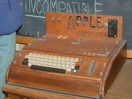 Apple I, o primeiro produto da Apple |
Macintosh, lançado em 1984 |
| 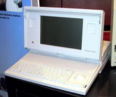 Macintosh Portable, lançado em 1989 |
| 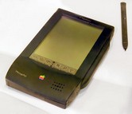 Apple Newton, lançado em 1993 |
| 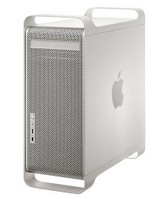 Power Macintosh, desenvolvido de 1994 a 2006 |
| 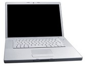 MacBook Pro |
| 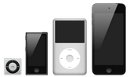 A família iPod atual, com o IPod shuffle, iPod nano, iPod Classic e iPod touch |
Iphone 7 |
Apple Watch |
Ajude o Site Faça a Sua Doação